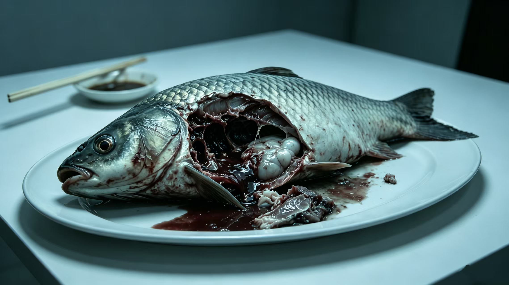

那年夏天多雨，你与挚友结伴，去回川市的水库钓鱼散心。
库水是灰绿色的，黏在岸边石头上，一层一层，干了又湿。你们在坝下蹲了整个下午，鱼漂一动不动，水汽闷得人皮肤发黏。快收竿的时候，才钓上来一条。鱼出水时活蹦乱跳，鳞光雪亮，新鲜得不像话。你们没多想，就在岸边简单收拾了，生火，做熟，准备吃。
可吃着吃着，不对劲了。那条鱼外表完好，内里却从腹腔烂了个透。你夹开第二筷，看见里面的肉已经烂成一团，灰白的，黏的，混着说不清的东西。朋友脸色一下子白了，你也是。你们蹲在岸边，把吃进去的全吐了出来，吐得嗓子眼里都是酸水，越吐越觉得，浑身发凉。
缓过神来，你们谁都没说话，只把东西胡乱塞进背包，逃也似的下了山。回去的路上，你一直觉得嘴里有股甜腥味，怎么漱都漱不掉。你跟自己说，是鱼不新鲜，是自己想多了。

可谁也没想到，真正的怪事，才刚开始。
那之后几天，朋友越来越不对。先是话少，后来是整夜不睡，再后来，ta开始一遍一遍给你发消息，措辞一模一样：「再去回川水库钓鱼吧。那里的鱼，真的太美味了。」你在电话里听出ta的声音有点飘，像隔着水在说话。
ta从前不是这样的。ta从前会笑，会骂人，会为了鸡毛蒜皮跟你吵。现在ta只会说这一句，说的时候眼睛亮晶晶的，亮得发毛。你劝ta，ta不听；你骂ta，ta笑。你没办法，只能收拾了渔具，再陪ta回一次水库，你说不清自己是想弄清楚，还是怕ta一个人去。
出发前夜，你鬼使神差点开了回川市公众信息网，想查查水库最近的公告。想给这场说不清的怪事，找出哪怕一丝头绪。